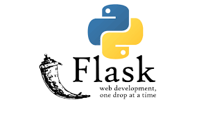
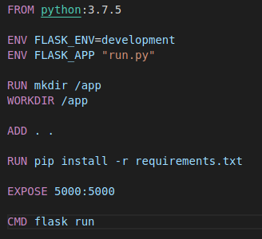

<!DOCTYPE html>
<html lang="en">
  <head>
    <meta charset="utf-8" />
    <meta name="viewport" content="width=device-width, initial-scale=1.0, maximum-scale=1.0, user-scalable=no" />

    <title>Presentacion de Proyecto de software</title>
    <link rel="stylesheet" href="./css/reveal.css" />
    <link rel="stylesheet" href="./css/theme/solarized.css" id="theme" />
    <link rel="stylesheet" href="./css/highlight/atom-one-dark.css" />
    <link rel="stylesheet" href="./css/print/paper.css" type="text/css" media="print" />
    <link rel="stylesheet" href="./_assets/src/css/styles.css" />

  </head>
  <body>
    <div class="reveal">
      <div class="slides"><section ><section data-markdown><script type="text/template">

# Proyecto de software 2019
</script></section><section data-markdown><script type="text/template">## Orquesta escuela de Berisso

</script></section><section data-markdown><script type="text/template">### Integrantes del grupo 16
- Agustin Vanzato
- Federico Ramon Gasquez
- Gonzalo Bilbao (Abandonó en la promoción)
</script></section><section data-markdown><script type="text/template">
### Temas

- Python-Flask
- VueJS
- Virtualización con Docker

</script></section></section><section ><section data-markdown><script type="text/template">


</script></section><section data-markdown><script type="text/template">## Flask

Flask es un Framework minimalista que permite crear aplicaciones web rápidamente, sin ninguna estructura fija, y la capacidad de escalarlo tanto como sea necesario
</script></section><section data-markdown><script type="text/template">### Patron MVC (MODELO-VISTA-CONTROLADOR)

- Modelo: Se encarga de los datos, generalmente (pero no obligatoriamente) consultando la base de datos. Actualizaciones, consultas, búsquedas, etc. todo eso va aquí, en el modelo.
- El Controlador: Responde a eventos (usualmente acciones del usuario) e invoca peticiones al 'modelo' cuando se hace alguna solicitud sobre la información (por ejemplo, mostrar los datos de un usuario o editarlos).
- La Vista: Son la representación visual de los datos, todo lo que tenga que ver con la interfaz gráfica va aquí.
</script></section><section data-markdown><script type="text/template">
### Estructura interna del proyecto

```
.
├── config                    # Configuraciones para el despliegue del entorno productivo y entorno de pruebas
├── helpers                   # Archivos con funciones útiles que son utilizadas en varios lugares
├── models                    # Modelos
├── resources                 # Controladores
├── static                    # Archivos tales como estilos, JavaScript, imágenes
├── templates                 # Vistas
├── validations               # Reglas para validar los formularios
|   db.py                     # Funciones para la conexión con la base de datos
|   __init__.py               # Inicializa el proyecto y contiene todas las rutas que entiende el sistema
```
</script></section><section data-markdown><script type="text/template">
### Switch con la logica de las validaciones

```python
from flaskps.helpers import field as validation
from flaskps.helpers import auth as helper_auth
from flask import session


def validate(rules, form=[]):
    username = helper_auth.authenticated(session) or ""
    switch = {
        "compare_fields": lambda field: validation.compare_fields(
            form[field],
            rules[field]["name"],
            form[rules[field]["compare_fields"]],
            rules[rules[field]["compare_fields"]]["name"],
        ),
        "min_length": lambda field: validation.min_length(
            form[field], rules[field]["name"], rules[field]["min_length"]
        ),
        "max_length": lambda field: validation.max_length(
            form[field], rules[field]["name"], rules[field]["max_length"]
        ),
        "email": lambda field: validation.email(form[field]),
        "unique_mail": lambda field: validation.unique_mail(form[field], username),
        "unique_user": lambda field: validation.unique_user(form[field]),
        "presence": lambda field: validation.presence(
            form[field], rules[field]["name"]
        ),
        "type_number": lambda field: validation.type_number(form[field], rules[field]["name"]),
        "name": lambda field: 0,
    }
    error_count = 0
    for field_rules in dict.keys(rules):
        for rule in dict.keys(rules[field_rules]):
            func = switch.get(rule, lambda: "nothing")
            result = func(field_rules)
            error_count += result
            if result == 1 and rule == "presence":
                break

    return error_count

```
</script></section><section data-markdown><script type="text/template">
### Funciones para validar

```python
from flask import flash
import re


def compare_fields(field1, name1, field2, name2):
    if field1 != field2:
        message = (
            "El campo " + str(name1) + " y el campo " + str(name2) + " no coinciden"
        )
        flash(message, "negative")
        return 1
    else:
        return 0


def min_length(field, name, length):
    if len(field) < length:
        message = "El campo " + str(name) + " no posee el tamaño minimo"
        flash(message, "negative")
        return 1
    else:
        return 0


def max_length(field, name, length):
    if len(field) > length:
        message = "El campo " + str(name) + " supera el tamaño maximo"
        flash(message, "negative")
        return 1
    else:
        return 0


def email(field):
    regex = "^\w+([\.-]?\w+)*@\w+([\.-]?\w+)*(\.\w{2,3})+$"
    if not re.search(regex, field):
        flash("El formato del mail no es valido", "negative")
        return 1
    else:
        return 0


```
</script></section><section data-markdown><script type="text/template">
### Ejemplo de reglas para el registrar

```py
rules = {
    "username": {"presence": True, "unique_user": True, "name": "usuario"},
    "last_name": {"presence": True, "name": "apellido"},
    "first_name": {"presence": True, "name": "nombre"},
    "email": {"presence": True, "email": True, "unique_mail": True, "name": "email"},
    "password": {
        "presence": True,
        "min_length": 6,
        "compare_fields": "confirm_password",
        "name": "contraseña",
    },
    "confirm_password": {
        "presence": True,
        "min_length": 6,
        "name": "confirmar contraseña",
    },
}
```

</script></section></section><section ><section data-markdown><script type="text/template">


</script></section><section data-markdown><script type="text/template">## VueJS

- A diferencia de otros frameworks monolíticos, Vue está diseñado desde el inicio para ser adoptado incrementalmenteLa biblioteca principal se enfoca solo en la capa de la vista, y es muy simple de utilizar e integrar con otros proyectos o bibliotecas existentes.
- Posee una gran facilidad de aprendizaje y uso con respecto a otros frameworks como ReactJS.</script></section><section data-markdown><script type="text/template">
## VueJS
- Es un framework "reactivo" que implementa "two way data-binding": enlace de datos en dos direcciones (entre la vista y el modelo) de una manera muy eficiente y rápida.
- utiliza el patron MVVM
</script></section><section data-markdown><script type="text/template">
### Estructura del cliente vue

```
.
├── assets                    # Archivos estaticos, como imagenes
├── components                # Componentes reutilizables (vistas)
├── helpers                   # Archivos con funciones útiles que son utilizadas en varios lugares
├── routes                    # Declaracion de rutas
├── models                    # Modelos
|    App.vue                   # Layout de las vistas
|    main.js                   # Inicializa el componente raiz de proyecto y configura los pluggins de terceros a utilizar
```
</script></section><section data-markdown><script type="text/template">### Vue CLI (COMMAND LINE INTERFACE)

- El `vue-cli` (es decir, la “interfaz de línea de comandos Vue”) es una herramienta creada por el equipo Vue.js para ayudar a facilitar el rápido desarrollo de las aplicaciones Vue.
- vue create <nombre-del-proyecto> te permite generar un proyecto de manera rapida con configuraciones tales como babel, vuex, router, linter, entre otros.
</script></section><section data-markdown><script type="text/template">
### Integracion con flask

En el package.json (archivo principal que contiene la configuracion del proyecto), agregamos un script que utiliza
vue cli para convertir los archivos .vue, en estaticos que flask puede utilizar, para esto es necesario brindar una configuracion en un archivo vue.config.js
</script></section><section data-markdown><script type="text/template">
### Configuracion


```javascript
module.exports = {
  outputDir: '../flaskps/templates/vue',
  assetsDir: '../../static'
}

```

</script></section></section><section ><section data-markdown><script type="text/template">
## Virtualización</script></section><section data-markdown><script type="text/template">
## Virtualización
En la cátedra se promueve virtualizar el código python con virtual env, pero no se decía nada sobre la base de datos
</script></section><section data-markdown><script type="text/template">
Para evitar problemas de compatibilidad entre miembros del grupo utilizamos docker para virtualizar la base de datos y usamos docker-compose para también tener un phpmyadmin.
</script></section><section data-markdown><script type="text/template">
¿Que pasa cuando se quiere programar en un dispositivo nuevo?
</script></section><section data-markdown><script type="text/template">
Terminamos armando un docker para python y lo agregamos al docker-compose</script></section><section data-markdown><script type="text/template">

</script></section><section data-markdown><script type="text/template">
### Concluisión

* Para proyectos simples es una buena opción virtual env ya que es más liviano
* Para proyectos que usen más servicios como una base de datos, resulta más cómodo usar Docker para el desarrollo 
</script></section></section></div>
    </div>

    <script src="./lib/js/head.min.js"></script>
    <script src="./js/reveal.js"></script>

    <script>
      function extend() {
        var target = {};
        for (var i = 0; i < arguments.length; i++) {
          var source = arguments[i];
          for (var key in source) {
            if (source.hasOwnProperty(key)) {
              target[key] = source[key];
            }
          }
        }
        return target;
      }

      // Optional libraries used to extend on reveal.js
      var deps = [
        { src: './lib/js/classList.js', condition: function() { return !document.body.classList; } },
        { src: './plugin/markdown/marked.js', condition: function() { return !!document.querySelector('[data-markdown]'); } },
        { src: './plugin/markdown/markdown.js', condition: function() { return !!document.querySelector('[data-markdown]'); } },
        { src: './plugin/highlight/highlight.js', async: true, callback: function() { hljs.initHighlightingOnLoad(); } },
        { src: './plugin/zoom-js/zoom.js', async: true },
        { src: './plugin/notes/notes.js', async: true },
        { src: './plugin/math/math.js', async: true }
      ];

      // default options to init reveal.js
      var defaultOptions = {
        controls: true,
        progress: true,
        history: true,
        center: true,
        transition: 'default', // none/fade/slide/convex/concave/zoom
        dependencies: deps
      };

      // options from URL query string
      var queryOptions = Reveal.getQueryHash() || {};

      var options = extend(defaultOptions, {}, queryOptions);
    </script>


    <script>
      Reveal.initialize(options);
    </script>
  </body>
</html>
